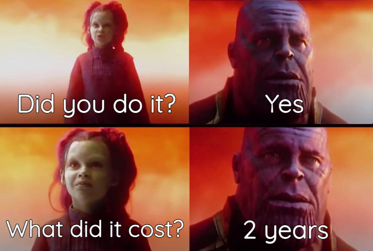
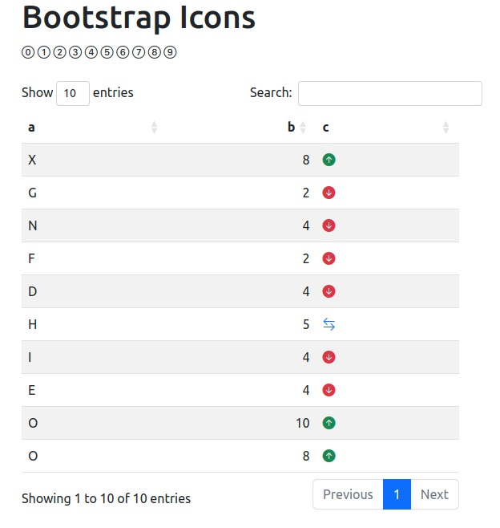

Introduction
Today’s one of those days when I’m like “Maybe I’m here for some easy parts after all”.
I have an excuse though, hoping you’ll buy it. 🤞🏽
When I was a beginner in shiny (Does one actually ever stop being a beginner?), every other website I visited had some cool icons.
I couldn’t for the life of me figure out how to use another icon library apart from shiny’s default ones (Free fontawesome kit and glyphicons).
In short, this post is more of me narrating to my younger self how I finally made it.

Good thing is that younger me didn’t know a lot and so it won’t take much to impress him, meaning this is going to be short.
Demo

Bootstrap Icons is a free and open source library:
- It has many icons you can choose from (over 1800 at the time of writing this)
- You can style each of the icons as you wish
Importing
To use the icons, you first need to import them. You can do so:
- In the header of your UI using
tags$link, or, - In your css file using
@import.
Let’s go with the first option.
Head over to the website, find the CDN (Content Delivery Network) link and copy it.
Once on the website, press CTRL + F and type in cdn. The page will scroll directly to the cdn link.
If you’re on Mac I think COMMAND + F should work.
Now let’s add it to our UI:
ui.R
ui <- bslib::page(
title = "Bootstrap Icons",
theme = bslib::bs_theme(version = 5),
tags$head(
tags$link(
rel = "stylesheet",
href = "https://cdn.jsdelivr.net/npm/bootstrap-icons@1.10.5/font/bootstrap-icons.css"
)
)
)Usage
We will use the <i> html tag to add icons to our app. In shiny, this is equivalent to tags$i().
On the Bootstrap icons website click on any icon. You should be able to see the <i> tag for the icon. Copy the class.
Now back in your shiny app, you can use tags$i(class = "what-you-copied") eg.
tags$i(class = "bi bi-x-circle")Which should show this:
Styling
Feel free to style the icons to your app’s theme.
For me, I’m okay using Bootstrap 5 classes on the icons. Here are 2 examples showing how you can customize the icons’ appearance:
Color
To change the color, add the text-* classes.
tags$div(
tags$i(class = "bi bi-x-circle text-success"),
tags$i(class = "bi bi-x-circle text-danger"),
tags$i(class = "bi bi-x-circle text-warning"),
tags$i(class = "bi bi-x-circle text-primary")
)
Size
You can use the fs-* classes to change the size of an icon.
tags$div(
tags$i(class = "bi bi-x-circle text-success fs-1"),
tags$i(class = "bi bi-x-circle text-danger fs-2"),
tags$i(class = "bi bi-x-circle text-warning fs-3"),
tags$i(class = "bi bi-x-circle text-primary fs-4")
)
Tables
You can as well use the icons in tables. I will demonstrate this using {DT}.
ui.R
DT::DTOutput(outputId = "thetable")server.R
# up, down and side arrow icons:
up <- tags$i(class = "bi bi-arrow-up-circle-fill text-success") |>
as.character()
down <- tags$i(class = "bi bi-arrow-down-circle-fill text-danger") |>
as.character()
side <- tags$i(class = "bi bi-arrow-left-right text-primary") |>
as.character()
# make an example data.frame:
a <- sample(LETTERS, size = 10, replace = TRUE)
b <- sample(1:10, size = 10, replace = TRUE)
c <- ifelse(b > 7, up, ifelse(b > 4, side, down))
DT <- data.frame(a, b, c)
server <- \(input, output, session) {
output$thetable <- DT::renderDT({
DT::datatable(DT, escape = FALSE, rownames = FALSE)
})
}Two things to note here:
- We converted the icons to character format since a dataframe cannot contain an object of class
shiny.tag - We set the option
escape = FALSEinDT::datatable()to avoid escaping html entities in the table (our icons). So instead of them being showed as characters, they will be parsed to real html tags.
The resulting table should be the same as the one in the demo.
App
Here’s the complete app:
global.R
library(shiny)Show UI code
ui.R
one_to_nine <- paste0("bi bi-", 0:9, "-circle")
ui <- bslib::page(
title = "Bootstrap Icons",
theme = bslib::bs_theme(version = 5),
tags$head(
tags$link(
rel = "stylesheet",
href = "https://cdn.jsdelivr.net/npm/bootstrap-icons@1.10.5/font/bootstrap-icons.css"
)
),
tags$div(
class = "container",
tags$h1("Bootstrap Icons"),
lapply(one_to_nine, \(x) tags$i(class = x)),
tags$div(
tags$i(class = "bi bi-x-circle text-success"),
tags$i(class = "bi bi-x-circle text-danger"),
tags$i(class = "bi bi-x-circle text-warning"),
tags$i(class = "bi bi-x-circle text-primary")
),
tags$div(
tags$i(class = "bi bi-x-circle text-success fs-1"),
tags$i(class = "bi bi-x-circle text-danger fs-2"),
tags$i(class = "bi bi-x-circle text-warning fs-3"),
tags$i(class = "bi bi-x-circle text-primary fs-4")
),
fluidRow(
class = "mt-4",
column(
width = 6,
DT::DTOutput(outputId = "thetable")
)
)
)
)Show server code
server.R
# up, down and side arrow icons:
up <- tags$i(class = "bi bi-arrow-up-circle-fill text-success") |>
as.character()
down <- tags$i(class = "bi bi-arrow-down-circle-fill text-danger") |>
as.character()
side <- tags$i(class = "bi bi-arrow-left-right text-primary") |>
as.character()
# make an example data.frame:
a <- sample(LETTERS, size = 10, replace = TRUE)
b <- sample(1:10, size = 10, replace = TRUE)
c <- ifelse(b > 7, up, ifelse(b > 4, side, down))
DT <- data.frame(a, b, c)
server <- \(input, output, session) {
output$thetable <- DT::renderDT({
DT::datatable(DT, escape = FALSE, rownames = FALSE)
})
}Conclusion
$(this) has been Bootstrap icons in Shiny.